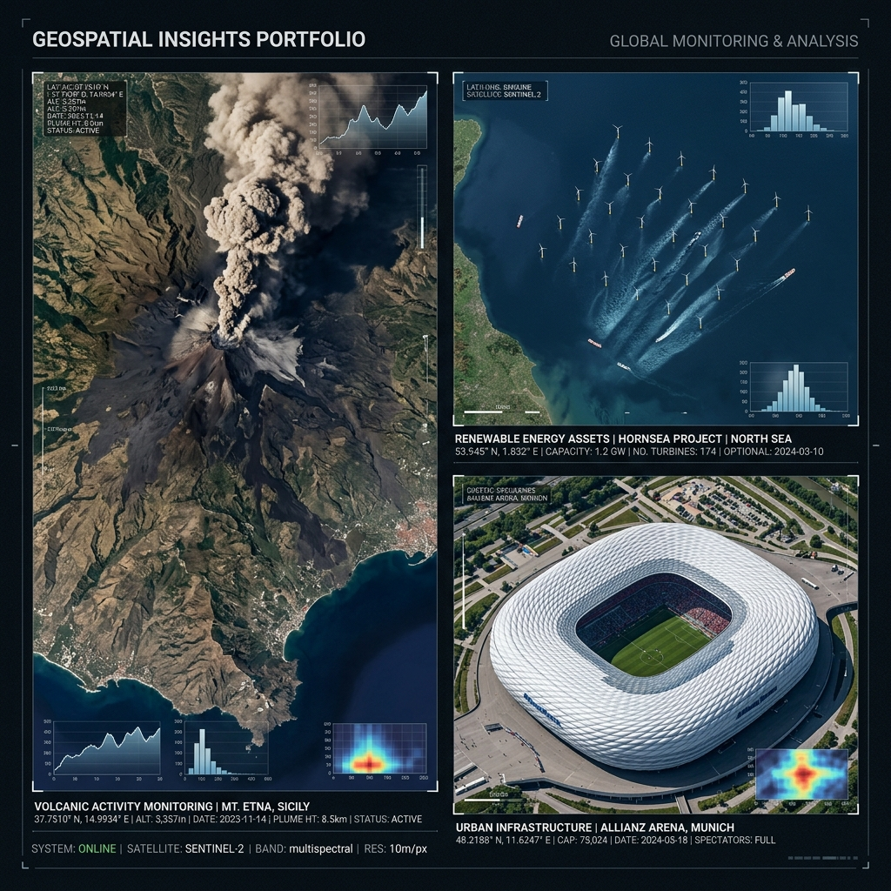
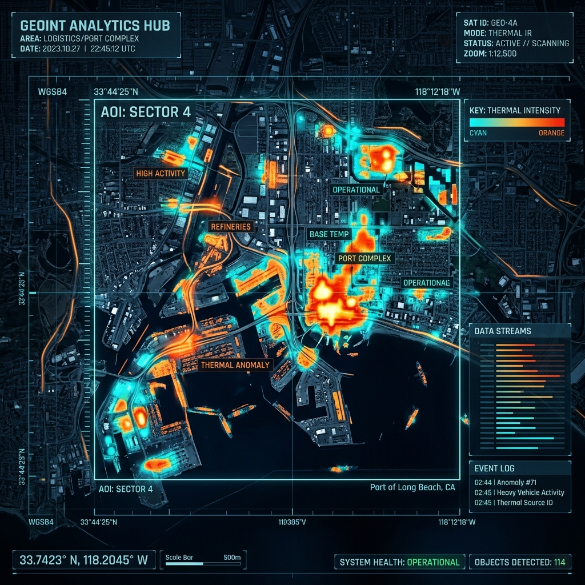
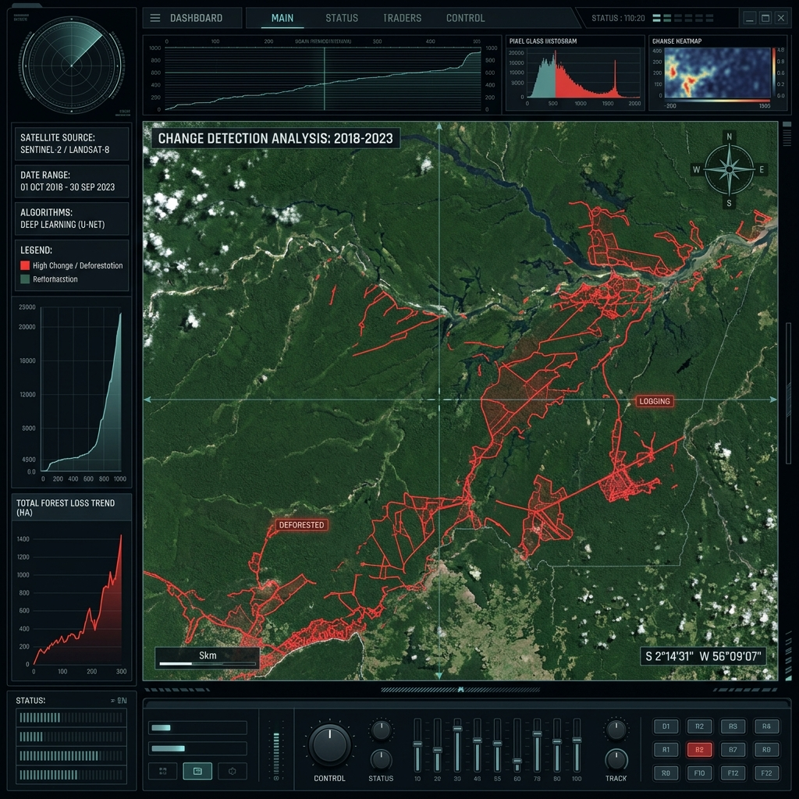
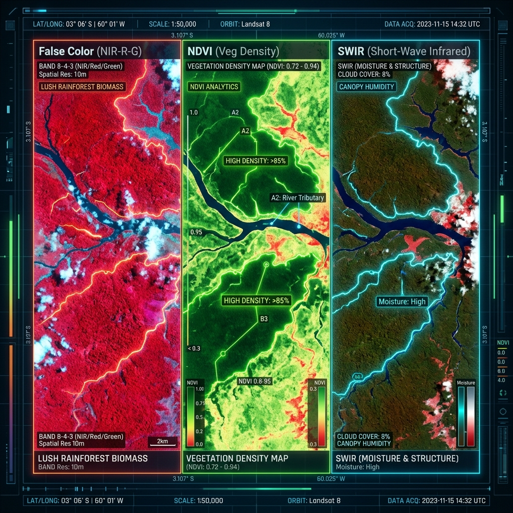
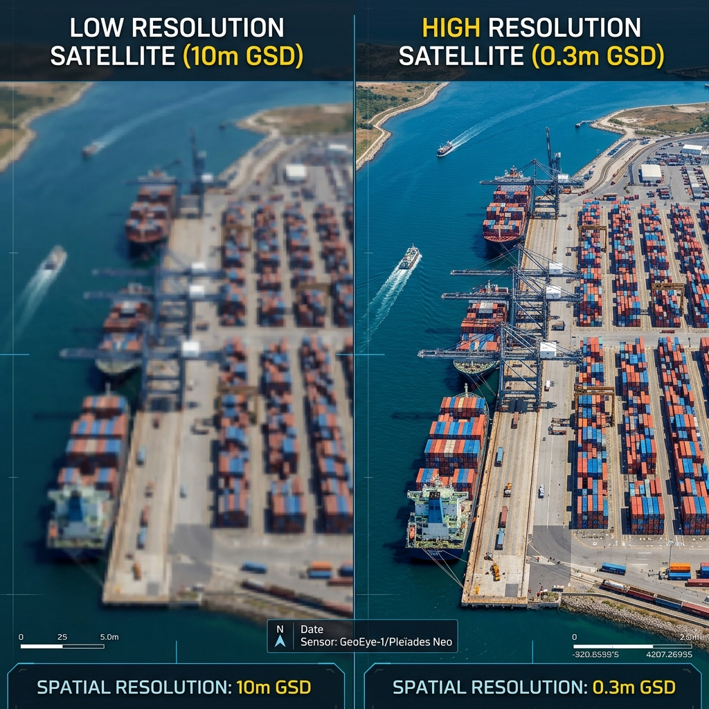
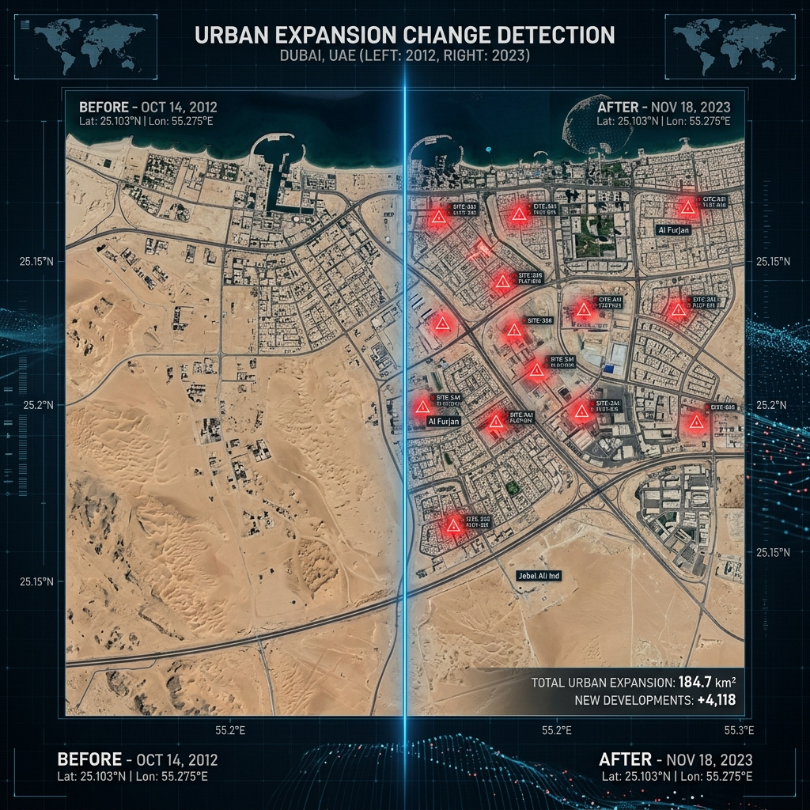

Global Intelligence Repository
Tactical mosaic of sub-meter analytics across diverse operational sectors.



Unlocking terrestrial insights through high-cadence satellite monitoring and AI-powered spectral interpretation.
Observe the evolution of any terrain with pixel-perfect precision.
We establish a high-resolution historical baseline for your Area of Interest (AOI).
Our algorithms compare new satellite passes against the baseline to identify deviations.
Receive automated alerts and detailed reports on all significant terrestrial modifications.
Monitor remote assets and sensitive sites without physical presence. Our tracking covers even the most inaccessible regions of the planet.
Strategic movement tracking.
Site surveillance & safety.
Illegal logging detection.
Construction monitoring.


By analyzing the unique spectral reflectance of Earth's surface, we can identify mineral deposits, assess crop health, and detect chemical leaks invisible to the human eye.
Short-wave infrared for moisture detection and soil composition.
Enhanced vegetation vitality mapping and forest health monitoring.
Heat intensity mapping for industrial monitoring and wildfire tracking.
Combining spectral data with high-res panchromatic layers for clarity.
Understanding the critical difference in sensor precision.

Strategic regional monitoring. Ideal for broad environmental tracking.
SENTINEL-2Tactical site surveillance. Tracking infrastructure and large assets.
PLANET SCOPEHigh-precision analytics. Identifying individual vehicles and objects.
WORLDVIEW-3
Our systems perform automated pixel-wise comparisons across time series data to reveal patterns of growth, decay, or intervention.
Tactical mosaic of sub-meter analytics across diverse operational sectors.

